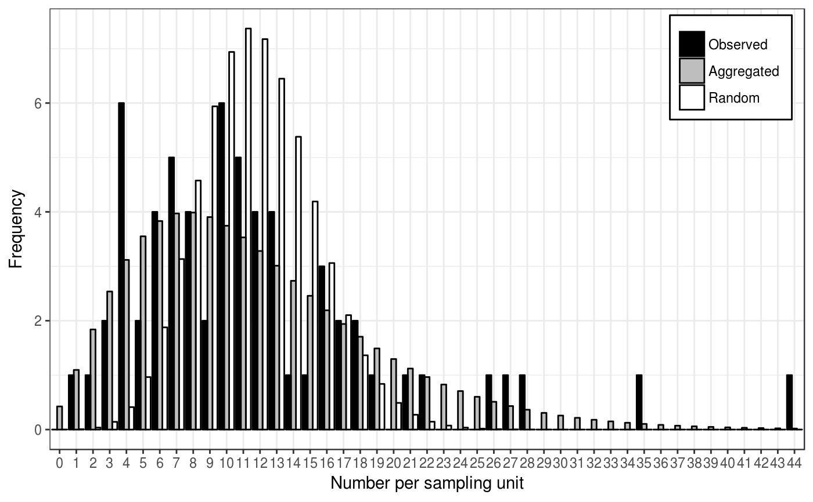
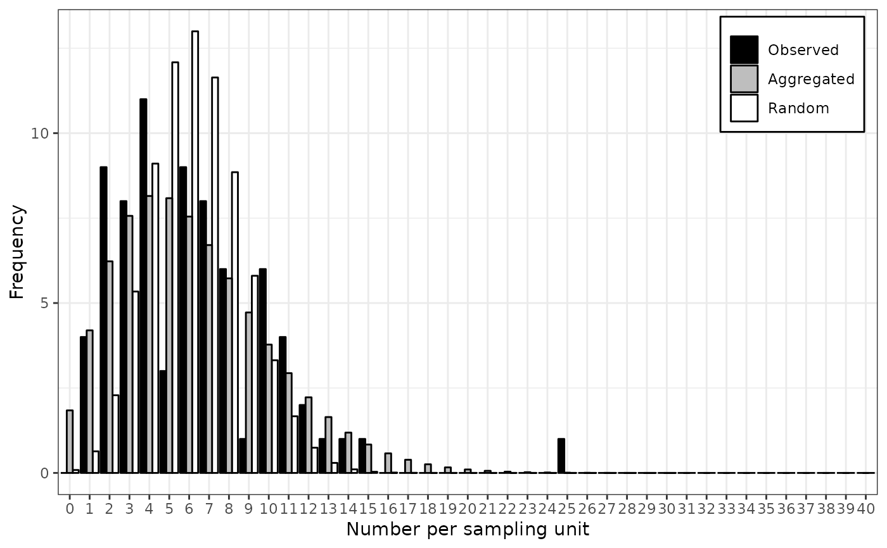
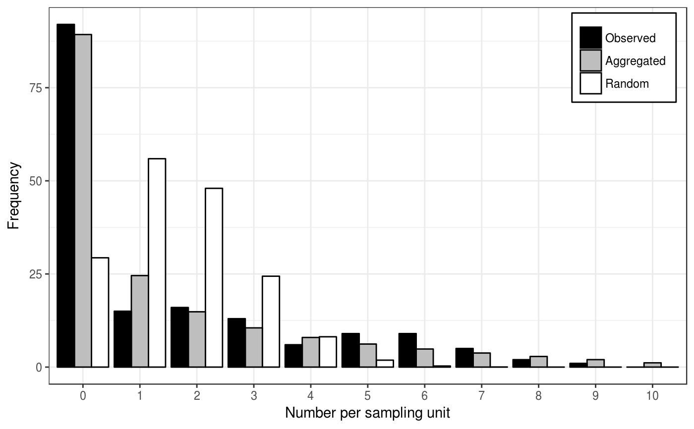
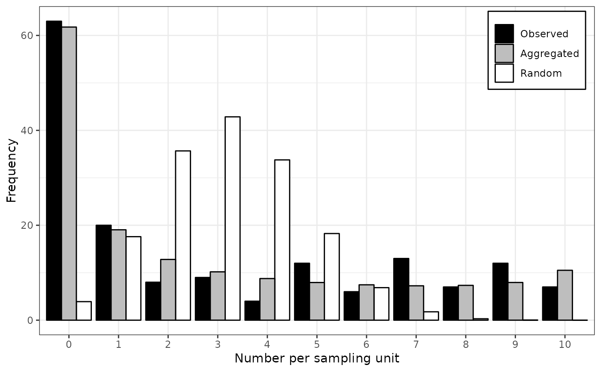

R/distr-fitting.R
fit_two_distr.RdDifferent distributions may be used depending on the kind of provided data. By default, the Poisson and negative binomial distributions are fitted to count data, whereas the binomial and beta-binomial distributions are used with incidence data. Either Randomness assumption (Poisson or binomial distributions) or aggregation assumption (negative binomial or beta-binomial) are made, and then, a goodness-of-fit comparison of both distributions is made using a log-likelihood ratio test.
fit_two_distr(data, ...) # S3 method for default fit_two_distr(data, random, aggregated, ...) # S3 method for count fit_two_distr(data, random = smle_pois, aggregated = smle_nbinom, n_est = c(random = 1, aggregated = 2), ...) # S3 method for incidence fit_two_distr(data, random = smle_binom, aggregated = smle_betabinom, n_est = c(random = 1, aggregated = 2), ...)
| data | An |
|---|---|
| ... | Additional arguments to be passed to other methods. |
| random | Distribution to describe random patterns. |
| aggregated | Distribution to describe aggregated patterns. |
| n_est | Number of estimated parameters for both distributions. |
An object of class fit_two_distr, which is a list containing at least
the following components:
call | The function call. |
name | The names of both distributions. |
model | The outputs of fitting process for both distributions. |
llr | The result of the log-likelihood ratio test. |
Other components can be present such as:
param | A numeric matrix of estimated parameters (that can be
printed using printCoefmat). |
freq | A data frame or a matrix with the observed and expected frequencies for both distributions for the different categories. |
gof | Goodness-of-fit tests for both distributions (which are typically chi-squared goodness-of-fit tests). |
Under the hood, distr_fit relies on the smle utility
which is a wrapped around the optim procedure.
Note that there may appear warnings about chi-squared goodness-of-fit tests if any expected count is less than 5 (Cochran's rule of thumb).
Madden LV, Hughes G. 1995. Plant disease incidence: Distributions, heterogeneity, and temporal analysis. Annual Review of Phytopathology 33(1): 529–564. doi:10.1146/annurev.py.33.090195.002525
# Simple workflow for incidence data: my_data <- count(arthropods) my_data <- split(my_data, by = "t")[[3]] my_res <- fit_two_distr(my_data)#> Warning: Chi-squared approximation may be incorrect.#> Warning: Chi-squared approximation may be incorrect.summary(my_res)#> Fitting of two distributions by maximum likelihood #> for 'count' data. #> Parameter estimates: #> #> (1) Poisson (random): #> Estimate Std.Err Z value Pr(>z) #> lambda 11.68254 0.43062 27.129 < 2.2e-16 *** #> --- #> Signif. codes: 0 ‘***’ 0.001 ‘**’ 0.01 ‘*’ 0.05 ‘.’ 0.1 ‘ ’ 1 #> #> (2) Negative binomial (aggregated): #> Estimate Std.Err Z value Pr(>z) #> k 3.308038 0.742318 4.4564 8.336e-06 *** #> mu 11.682540 0.916690 12.7443 < 2.2e-16 *** #> prob 0.220675 0.040883 5.3977 6.748e-08 *** #> --- #> Signif. codes: 0 ‘***’ 0.001 ‘**’ 0.01 ‘*’ 0.05 ‘.’ 0.1 ‘ ’ 1plot(my_res)# Simple workflow for incidence data: my_data <- incidence(tobacco_viruses) my_res <- fit_two_distr(my_data)#> Warning: Chi-squared approximation may be incorrect.#> Warning: Chi-squared approximation may be incorrect.summary(my_res)#> Fitting of two distributions by maximum likelihood #> for 'incidence' data. #> Parameter estimates: #> #> (1) Binomial (random): #> Estimate Std.Err Z value Pr(>z) #> prob 0.1556667 0.0066188 23.519 < 2.2e-16 *** #> --- #> Signif. codes: 0 ‘***’ 0.001 ‘**’ 0.01 ‘*’ 0.05 ‘.’ 0.1 ‘ ’ 1 #> #> (2) Beta-binomial (aggregated): #> Estimate Std.Err Z value Pr(>z) #> alpha 3.211182 0.785169 4.0898 4.317e-05 *** #> beta 17.333526 4.419297 3.9222 8.773e-05 *** #> prob 0.156302 0.011120 14.0560 < 2.2e-16 *** #> rho 0.046415 0.011131 4.1698 3.049e-05 *** #> theta 0.048674 0.012241 3.9762 7.002e-05 *** #> --- #> Signif. codes: 0 ‘***’ 0.001 ‘**’ 0.01 ‘*’ 0.05 ‘.’ 0.1 ‘ ’ 1plot(my_res)# Note that there are other methods to fit some common distributions. # For example for the Poisson distribution, one can use glm: my_arthropods <- arthropods[arthropods$t == 3, ] my_model <- glm(my_arthropods$i ~ 1, family = poisson) lambda <- exp(coef(my_model)[[1]]) # unique(my_model$fitted.values) works also. lambda#> [1] 11.68254# ... or the fitdistr function in MASS package: require(MASS)#>#> lambda #> 11.6825397 #> ( 0.4306241)# For the binomial distribution, glm still works: my_model <- with(tobacco_viruses, glm(i/n ~ 1, family = binomial, weights = n)) prob <- logit(coef(my_model)[[1]], rev = TRUE) prob#> [1] 0.1556667# ... but the binomial distribution is not yet recognized by MASS::fitdistr. # Examples featured in Madden et al. (2007). # p. 242-243 my_data <- incidence(dogwood_anthracnose) my_data <- split(my_data, by = "t") my_fit_two_distr <- lapply(my_data, fit_two_distr)#> Warning: Chi-squared approximation may be incorrect.#> Warning: Chi-squared approximation may be incorrect.#> Warning: Chi-squared approximation may be incorrect.lapply(my_fit_two_distr, function(x) x$param$aggregated[c("prob", "theta"), ])#> $`1990` #> Estimate Std.Err Z value Pr(>z) #> prob 0.1526829 0.01741013 8.769772 1.790281e-18 #> theta 0.5222174 0.09437075 5.533679 3.135830e-08 #> #> $`1991` #> Estimate Std.Err Z value Pr(>z) #> prob 0.2985848 0.0258905 11.532600 9.037225e-31 #> theta 0.9978690 0.1404673 7.103922 1.212655e-12 #>lapply(my_fit_two_distr, plot)#> $`1990` #> NULL #> #> $`1991` #> NULL #>my_agg_index <- lapply(my_data, agg_index) lapply(my_agg_index, function(x) x$index)#> $`1990` #> [1] 3.848373 #> #> $`1991` #> [1] 5.596382 #>lapply(my_agg_index, chisq.test)#> $`1990` #> #> Chi-squared test for (N - 1)*index following a chi-squared #> distribution (df = N - 1) #> #> data: X[[i]] #> X-squared = 642.68, df = 167, p-value < 2.2e-16 #> #> #> $`1991` #> #> Chi-squared test for (N - 1)*index following a chi-squared #> distribution (df = N - 1) #> #> data: X[[i]] #> X-squared = 895.42, df = 160, p-value < 2.2e-16 #> #>